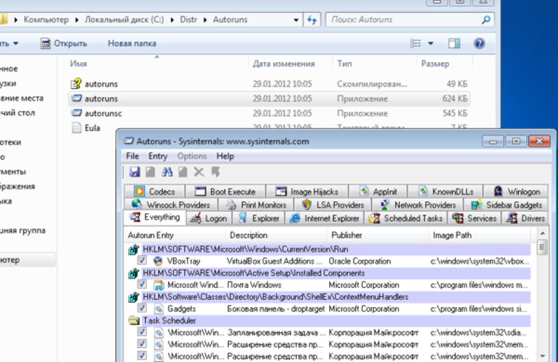

Настройка SRP (Software Restriction Policies)
Меня однажды спросили о том есть ли надежное защитное средство от вирусов и если есть то как его получить…
Это средство есть и оно совершенно бесплатное, правда оно не гарантирует 100% защиту, но его использование сильно увеличивает стойкость системы. Средство доступно всем пользователям Windows (за исключением Windows Home) и называется оно “Политика Ограниченного Использования программ” (Software Restriction Policies) и встроено оно в следующие системы Microsoft:
o Windows XP Professional, Windows XP Media Center.
o Windows Vista Business, Windows Vista Enterprise & Ultimate.
o Windows 7 Professional, Windows 7 Enterprise & Ultimate.
o Windows Server 2003 и выше(все редакции).
Примечание: К сожалению, для пользователей использующих линейку операционных систем “Домашняя *” (Windows Home) оно не доступно. С одной стороны правильно, а с другой Микрософт мог бы дать этот крайне полезный инструмент…
Механизм защиты прост и эффективен, суть его в том что пользователю разрешено запускать только явно разрешенные приложения, это избавляет от всяческих неприятностей с установкой adware, spyware и прочей мути в профиль пользователя и еще от ряда неприятностей.
Настройка
Откройте оснастку “Локальная политика безопасности” одним из методов:
1. “Пуск” -> “Выполнить” -> secpol.msc -> “Политики ограниченного использования программ” (Software Restriction Policies)
2. “Пуск” -> “Панель управления” -> “Система и безопасность” -> “Администрирование” -> “Локальная политика безопасности” -> “Политики ограниченного использования программ” (Software Restriction Policies)
Создаем новую политику.
Политика включена. Теперь требуется произвести несколько настроек. Выберите пункт “Применение” и задайте правила как указано ниже. Это включит проверку всех программ и обеспечит защиту пользователей и администраторов на данном компьютере. Если же вы не хотите стеснять администратора в действиях то во втором пункте выберите “Всех пользователей, кроме локальных администраторов”.
Что бы пользователи могли использовать ярлыки на рабочем столе и в прочих местах необходимо разрешить их использовать.
Открываем пункт “Назначенные типы файлов” и удаляем из него расширение LNK.
Примечание: Удаление расширения LNK крайне спорное решение, но для упрощения реализации поставленной задачи поступить стоит именно так.
Теперь включаем правила “Белого списка”. Для этого переходим в подпапку “уровни безопасности” и задаем пункту “Запрещено” значение “По умолчанию”.
При необходимости разрешения выполнения программ из папок отличных от C:\Windows и C:\Program Files (они задаются как разрешенные по умолчанию) вам нужно добавить правило пути.
Например добавление пути C:\Distr c “Неограниченным” доступом. В этом случае стоит сразу учитывать что разрешения на запись в эту папку надо ограничивать и выдавать только администраторам.
Примечание: Если Вы устанавливали программное обеспечение на другой диск, например D:\Program Files и пр. что бы ПО могло запускаться необходимо добавить правило “пути”.
Дальнейшие действия просты и заключаются они в создании ярлыков на reg-файлы.
- Зачем? Вроде все уже настроено…
- Что бы упростить обновление системы и установку новых программ.
Создайте два файла и сохраните из на диске. Я предпочитаю C:\Program Files\Tools
SRP_Disable.reg – Отключение SRP
Windows Registry Editor Version 5.00
[HKEY_LOCAL_MACHINE\SOFTWARE\Policies\Microsoft\Windows\Safer\CodeIdentifiers]
"DefaultLevel"=dword:00040000
SRP_Enable.reg – Включение SRP
Windows Registry Editor Version 5.00
[HKEY_LOCAL_MACHINE\SOFTWARE\Policies\Microsoft\Windows\Safer\CodeIdentifiers]
"DefaultLevel"=dword:00000000
Проверка
Для проверки действия политики создайте в корне диска C: две папки C:\TEMP и C:\Distr. Положите в них любой исполняемый файл, я скачал утилиту autoruns, перезагрузите ваш компьютер. Зайдите в систему и попробуйте запустить утилиту из папки C:\TEMP
А теперь из папки C:\Distr

Как видите, нужный результат достигнут.
Остается решить самый важный вопрос. при работе с reg-файлами, которые мы создали выше, есть шанс забыть включить политику обратно (администратор просто забыл или забил  нужное подчеркнуть). Для этого необходимо выполнить последнее мероприятие.
нужное подчеркнуть). Для этого необходимо выполнить последнее мероприятие.
Подстраховка
В меню пуск, в строке поиска вводим cmd, на найденном ярлыке говорим “запустить от имени администратора”. Дальше вводим
gpedit
В открывшемся редакторе групповой политики выбираем – “Конфигурация компьютера” – “Конфигурация Windows” – “Сценарии”.
Добавляем наш reg-файл в автозагрузку так как показано на рисунке.

Теперь, в случае даже если администратор забудет реестром обратно включить политику SRP, то после перезагрузки политика вернется в её исходное состояние – Запрещено.